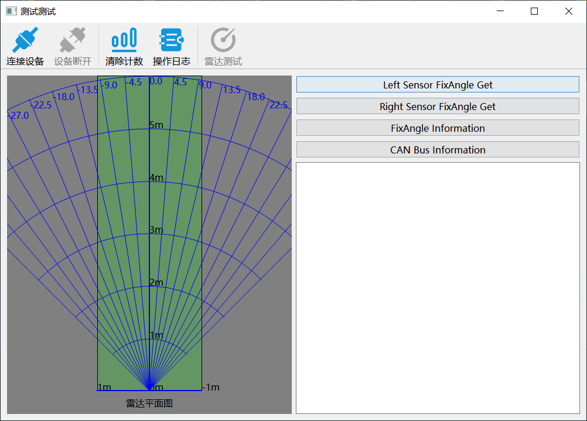
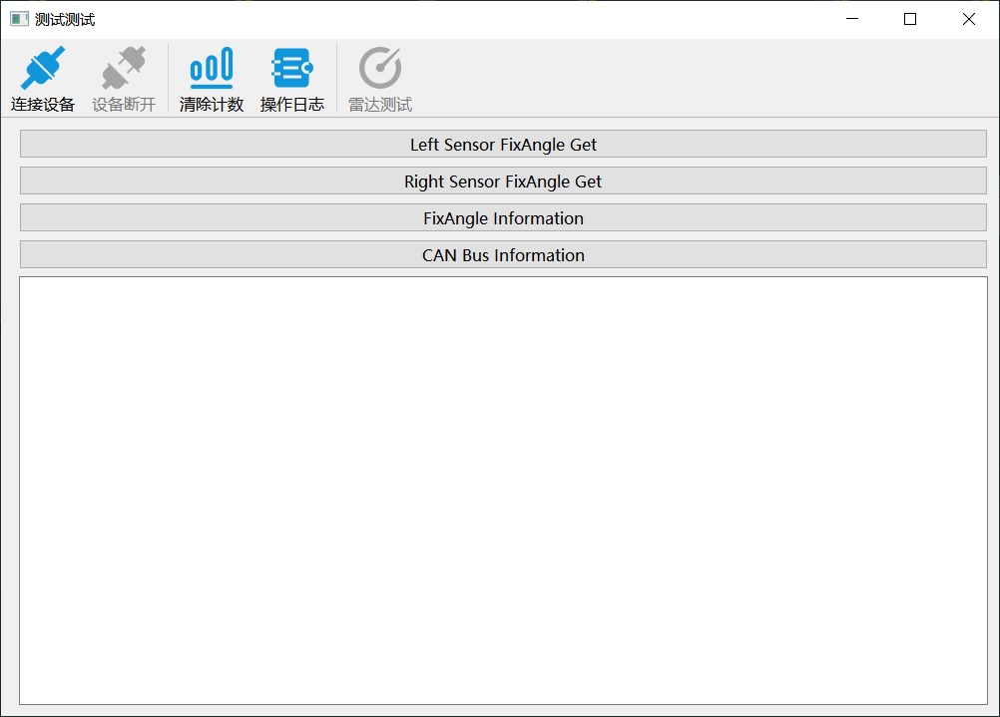
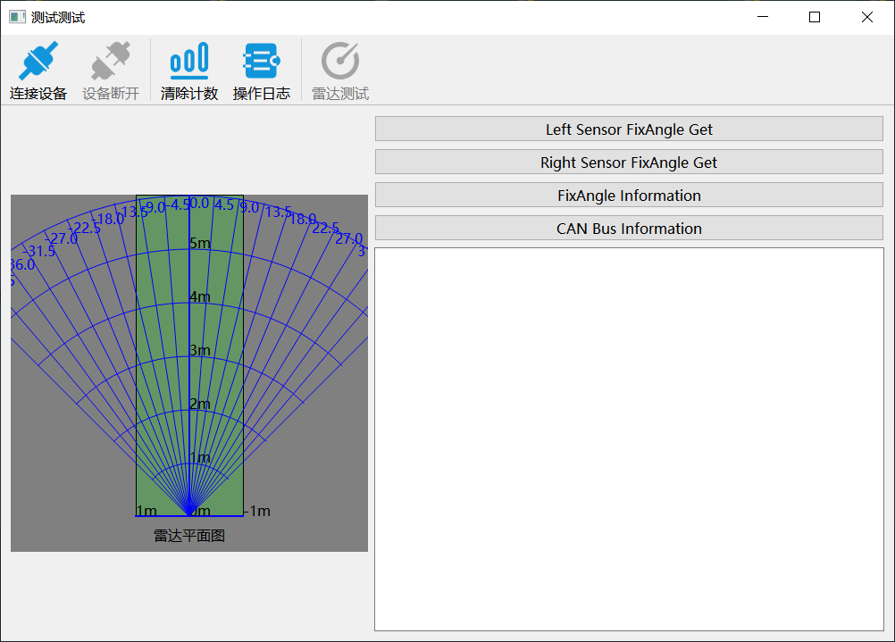
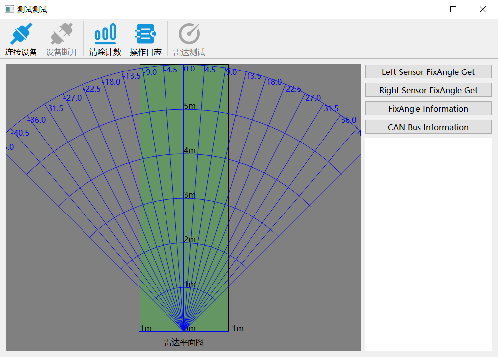

记录QGridLayout踩坑经历
本文最后更新于：2022年3月23日 晚上
简述
QGridLayout 官方文档：https://doc.qt.io/qtforpython/PySide2/QtWidgets/QGridLayout.html
最近在使用 Qt for Python 开发程序的过程中，被一个 QGridLayout 布局问题给搞得怀疑人生，好在是折腾了很久之后总算是解决了~
首先看一下解决问题后正常的界面是这样的：

主要是主界面的部分我使用 QGridLayout布局，希望左右两侧按比例 1:1 布局，左侧是一个 QWidget ，没有指定其大小，因为我是希望它能根据格子的大小自适应的调整其大小，也就是说如果格子能小到宽高均为0的话，它是可以不显示的。
艰难的过程
于是我写出了如下代码：
grid = QGridLayout()
grid.addWidget(self.widget_radar, 0, 0, 3, 1) # 3行1列
grid.addLayout(vbox_btns, 0, 1) # 右上侧的4个按钮
grid.addWidget(self.log_edit, 1, 1) # 右下侧的QTextEdit
grid.addLayout(self.hbox_debug, 2, 1) # 这是隐藏掉的一部分
# 这三行是必要的，并不是造成我问题的原因，简单说就是不能直接给QMainWindow设置Layout，这里就不细说啦
central_widget = QWidget(parent=self)
central_widget.setLayout(grid)
self.setCentralWidget(central_widget)实际运行后的效果如图所示：

是的，左侧的雷达界面没有显示出来。严格说是显示出来了，仔细观察可以看到左边边距相对于右边宽一点，宽的部分也就是看不到的雷达界面，更准确地说应该是格子布局的间距。
我真的折腾了好久不知道怎么解决，其实很快我就定位到左侧雷达界面并不是没有显示出来，找问题的过程中为了验证这个想法，我指定了雷达界面的大小为 400 * 400 。
self.widget_radar.setFixedSize(400, 400)然后运行，如图：

是吧，确实是能显示出来的。但是也不太可能说这么去指定大小啊，我既然选择使用格子布局就是为了让它自适应调整大小~
继续找解决办法，说实话我查遍了文档也没找到相关的说明，一开始以为是这样：
grid = QGridLayout()
grid.addWidget(self.widget_radar, 0, 0, 3, 1) # 3行1列
grid.addLayout(vbox_btns, 0, 1, 1, 1) # 指定第三个和第四个参数，即指定其跨度为1行1列
grid.addWidget(self.log_edit, 1, 1, 1, 1)
grid.addLayout(self.hbox_debug, 2, 1, 1, 1)上面代码中 addLayout() 和 addWidget() 第三个和第四个参数分别是行跨度和列跨度，以我最初的理解，我认为指定了第一列列跨度为1，第二列列跨度也为1，那么它们就应该宽度相等。但实际上并没有用，也说明其实不指定这两个参数的话默认就是一行一列。
解决问题
其实我只是抱着试一试的心态，试了下官方文档中的这个函数：
PySide2.QtWidgets.QGridLayout.setColumnStretch(column, stretch)成功解决问题🎉🎉🎉
最终的代码如下：
grid = QGridLayout()
grid.addWidget(self.widget_radar, 0, 0, 3, 1) # 3行1列
grid.addLayout(vbox_btns, 0, 1)
grid.addWidget(self.log_edit, 1, 1)
grid.addLayout(self.hbox_debug, 2, 1)
grid.setColumnStretch(0, 1) # 不指定比例的话第二列会撑展到第一列不能显示，造成不显示的根本原因
grid.setColumnStretch(1, 1) # 需要同时为第二列指定，两列才会始终以1:1的宽度排列这个函数是这么用的，第一个参数指定哪一列，列数从0开始，第二个参数为拉伸因子，也就是所占的比例吧。
上面代码中同时为两列指定了拉伸因子均为1，即两列的宽度将按1:1的比例排列。
只指定一列是达不到这个效果的，例如如果不为第二列指定，那么雷达界面这部分因为指定了拉伸银子1，所以会显示出来，但由于没有为第二列指定，所以第一列会撑展开，使第二列的宽度压缩到最小，如图：

相反如果只指定第二列的话，其实不难想到就会是前面雷达界面没有显示出来的样子了~
另外，同样也可以为行设置拉伸因子，方法都是一样的，用这个函数就可以了:
PySide2.QtWidgets.QGridLayout.setRowStretch(row, stretch)真的卡了好久，真尴尬……不过以后就知道该怎么做了🥴